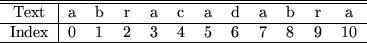
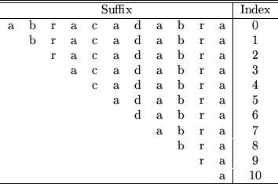
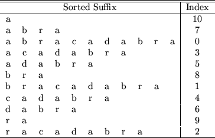
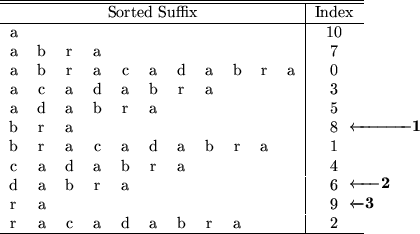

最終更新日: 2000-11-14
Suffix Arrayは巨大なテキストを高速に検索するためのデータ構造 です。テキストのサフィックスを辞書順 (ABC順) に並べ、それに 対するポインタを配列として格納したものが Suffix Array です。 サフィックスとはテキスト中のある位置からテキスト末尾までの文 字列のことをいいます。テキストへの検索は Suffix Array を用い て 2分探索の要領で行います。
では、 Suffix Arrayの構築に移りましょう。ここでは ``abracadabra''というテキストに対して Suffix Array を作成す ることにします。
まず最初に、テキストに対してインデックスポイントを割り当てる 必要があります。インデックスポイントは、検索が行える位置を指 定したものです。この例では、どの位置からでも検索が行えるよう に、すべての文字に対してインデックスポイントを割り当てていま す。

次に、対応するサフィックスの辞書順に従ってインデックスポイン トをソートします。サフィックスとインデックスポイントの対応関 係は次のようになります。

ソート後:

ソート後のインデックスポイントが Suffix Array です。
テキストへの検索は Suffix Array を用いた 2分探索により行うこ とができます。次の図は、サンプルのテキストに対して `ra' で検 索する過程を表しています。数字つきの矢印は、処理の順序を示し ます。

$Id: suffix-array.html,v 1.1.1.1 2004/06/11 18:57:27 satoru-t Exp $
satoru@namazu.org